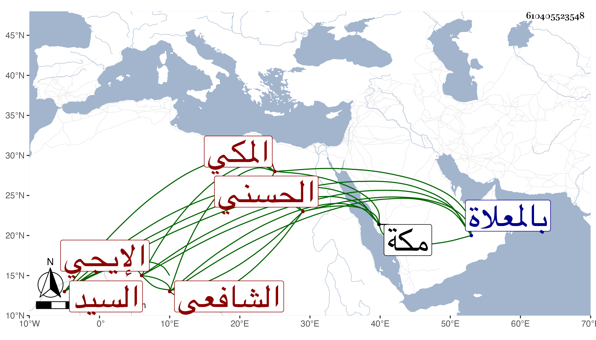

0902Sakhawi.DawLamic.ITO20230111-ara1.EIS1600.610405523548
Biography ID: 610405523548
728
محمد بن محمد بن محمد بن محمد بن عبد الله بن محمد بن عبد الله بن هادي السيد المحب أبو السعادات وأبو البركات بن العلاء بن العفيف الحسني الإيجي ثم المكي الشافعي الماضي أبوه وجده وأخوه عبيد الله ويعرف كأبيه بابن عفيف الدين . ولد قبل صبح سابع شعبان سنة أربعين وثمانمائة ونشأ فقرأ واشتغل ومات في رجب سنة ثمان وستين بمكة ودفن بالمعلاة عند جده ورؤيت له منامات صالحة أخبر بعضها أحمد بن أبي بكر بن أحمد بن موسى اليمني الأشعري مخدوعة رحمه الله وإيانا .
